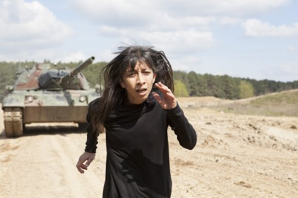

La sombra
der Schatten

Regina José Galindo
|
Deutschland 2018 Mit Regina José Galindo Commissioned by documenta 14
|
sonntag 14 okt 18.30 werkstattkino
Die Künstlerin läuft über Lehmwege zwischen Feldern, verfolgt von
einem deutschen Leopard-Panzer. Das immerwährende Kreisen um
Gewalt und Territorialfragen, Traumata und Krieg.
Die Arbeit dokumentiert eine Performance der guatemaltekischen
Künstlerin, die im Auftrag der documenta 2017 in der Nähe von
Kassel entstand.
Regina José Galindo 1974 inmitten des Bürgerkriegs in Guatemala-Stadt geboren, ist für ihre Risikofreude sowie das Ausloten der Grenzen ihres Körpers und seiner Ausdrucksfähigkeit bekannt. |